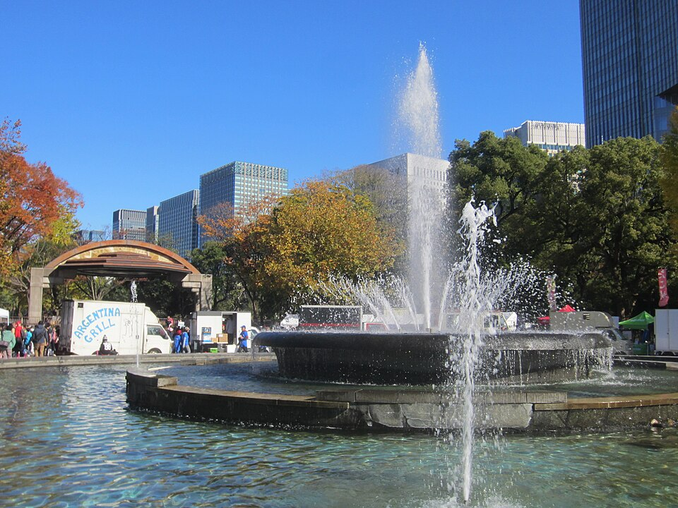

The morning, minute by minute
- 7:00
- 8:00
- 9:00
- Walk to Hibiya Park
- Hibiya Park7:30 to 8:00
- Sakuradamon Gate
- Walk back to the hotel8:15 to 8:45
Good to know before you go
The Outer Gardens of the palace are an open public area, so you can walk there at any hour. The East Gardens, where you pay a visit inside, open at 9:00, so we do not go in this morning.
- Open?
- The Outer Gardens and the plaza in front of Nijubashi are open to walk through. The East Gardens open at 9:00 (closed Mondays and Fridays), so they are not part of this walk.
- Weather
- Early October mornings in Tokyo are cool, about 18 to 20 degrees. A light jacket is enough.
- Toilets
- Hibiya Park has public toilets. Take a break there if you like.


- 1Walk at your own paceStop whenever you like and turn back. The walk is a suggestion.
- 2Take your phoneOpen the Google Maps link in the plan to see the route. It works on foot.
- 3Back at the hotelPlan to be back in the lobby by about 8:50, so you can sit for a few minutes before 9:00.
If you feel tired, it is perfectly fine to skip the walk and have a slow breakfast. We start at 9:00 either way.
A morning walk: park and palace gate
Leave 7:15 · about 4.8 km · back about 8:45
A slow morning. Hibiya Park, then Sakuradamon Gate and the open plaza of the Outer Gardens, and back the same way.
Email Yuuki- 7:15Leave THE BLOSSOM HIBIYAWalk to Hibiya Park, about 10 minutes.
- 7:30Hibiya ParkThe fountain, the pond and the old trees. Take your time.
- 8:00Sakuradamon GateThe samurai-era gate and the moat. From the plaza you can see the palace grounds across the lawn.
- 8:15Walk backThe same way, through Hibiya Park. You are back at the hotel by about 8:45.
All on foot and flat. About 4.8 km in total, about 60 minutes of walking plus stops. Open the route in Google Maps ↗
- Good for
- Time to sit and look, and still back with a margin before 9:00.
- Keep in mind
- Nijubashi bridge is about 10 minutes further on from Sakuradamon. If you feel good, go on and take a taxi back.
Meet Yuuki in the hotel lobby, 9:00
Yuuki meets you in the lobby of your hotel at 9:00.
THE BLOSSOM HIBIYA, Shimbashi 1-1-13, Minato-ku, Tokyo ↗
If you are running late, message Yuuki on WhatsApp. No problem at all.